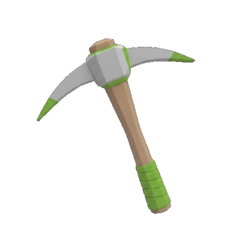
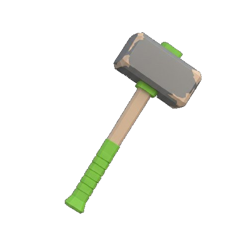

STONE FORGE
"Forging Knowledge Through Interactive Science and Crafting."
Explore, craft, and learn how raw materials become advanced technologies in a 3D educational adventure game.
Gameplay
Watch the Trailer
"Dive into StoneForge: turn raw materials into discoveries and adventures."
About the game
What is StoneForge?
StoneForge is an interactive 3D educational game designed to teach applied science concepts through exploration, crafting, and technological progression. The game transforms complex scientific processes into simple, visual, and engaging gameplay experiences.
Instead of traditional text-heavy lessons, players learn by interacting with materials, crafting tools, and completing invention-based challenges. Designed for students, educators, and curious learners of all levels.

Educational Objectives
Learn by Doing
StoneForge helps players understand the logical and sequential steps involved in invention, material processing, and technological development through hands-on gameplay.
From basic chemistry to metallurgy and mechanical concepts — scientific knowledge becomes tangible through play. Players develop problem-solving, logical thinking, and resource management skills naturally as they progress.

Features
How You Learn
Five core mechanics designed to make science click.
Procedural Crafting
Step-by-step crafting processes that simulate real scientific and industrial procedures — not just clicking a button.
Technology Progression
Unlock new tools, stations, and inventions as you advance from primitive materials to complex systems.
Cooperative Gameplay
Collaborate with others to complete large-scale projects, mirroring real industrial dependencies and teamwork.
Guided Learning System
NPC dialogues, missions, and prompts explain scientific processes in simple, beginner-friendly language.
Assessment & Feedback
Visual indicators and real-time feedback systems guide players during crafting and resource management tasks.
3D Open World
A fully explorable 3D environment built in Unity — interact with the world to discover how materials and science connect.
Gallery
Screenshots